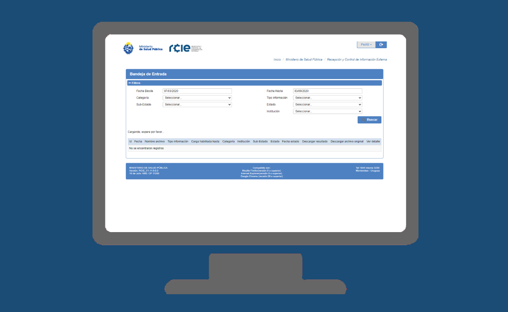

RCIE – Recepción y Control de Información Externa
Descripción
Es un sistema que tiene como objetivo principal recepcionar de forma segura y centralizada la información solicitada por el MSP, permitiendo un control y procesamiento automático de la misma. Para el prestador tiene la ventaja de tener centralizado en un único lugar todas las entregas que éste debe realizar y los tiempos de vencimientos para cada una de ellas, brindando mejor trazabilidad y transparencia de toda la información presentada. Además, permite optimizar los tiempos de procesamiento y de retroalimentación, ya que brinda en caso de rechazo, información detallada del mismo para que el usuario que está realizando la carga pueda corregir sin mayor esfuerzo.
Información que aporta
Los datos con los que se cuenta son particulares del tipo de entrega informada y datos generales de proceso. Al momento se recibe de manera rutinaria las entregas de:
- Convenios
- Niveles de Atención para Urgencia Emergencia
- Información puntual de líneas base, DJ y Auditorias de Meta 1 y Meta 2
- Covid Personal de la Salud En proceso de incorporarse:
- SIPS – Sistema Integral de Personal de Salud
- Procesamiento de SINADI Asistencial y Tasas Moderadoras
Incluido en plataforma de BI
Incluido en BI, a nivel de tableros
- Control de Entrega de RCIE
- Meta 2
En proceso de incorporarse
Base Completa / Vigencia
El sistema ingreso a producción en Abril 2018, la vigencia de cada entrega depende de cuando ingreso la misma al sistema
Unidad Dueña del Dato
Aplica para todos, depende de la entrega. Hoy tiene datos de JUNASA
Enlace servicio en línea